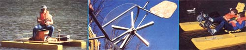

A split section of 1"" PVC pipe fasten,' to the deck secures the paddle in place as the rudder, to serve as the tiller linkage. This entire pivoting assembly hangs in its 3/4"" bushing from a bolt with a fender washer that's secured to a nut welded inside the top of the shaft.